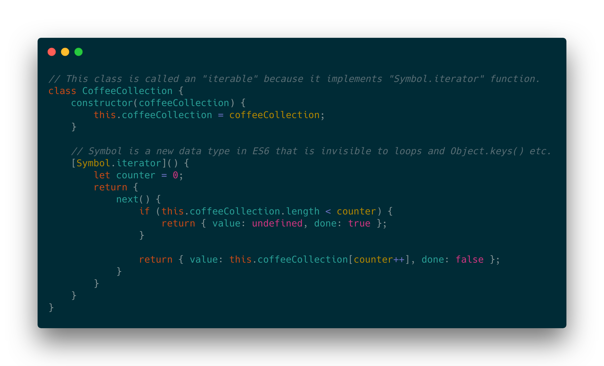
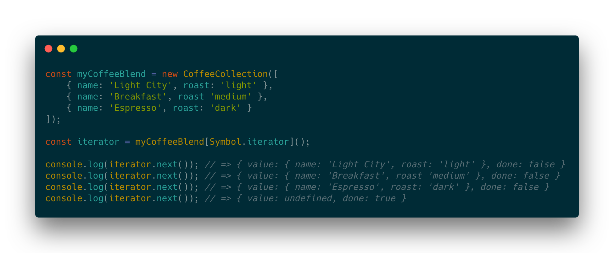
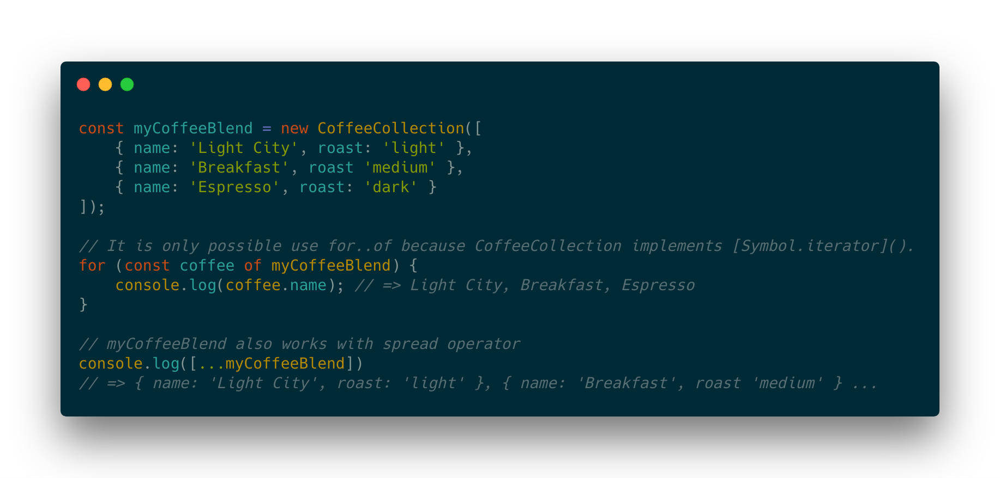
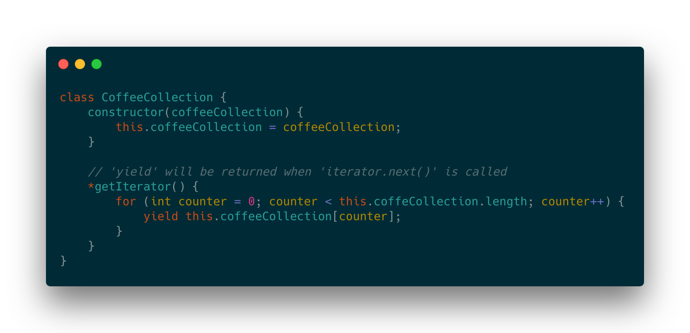
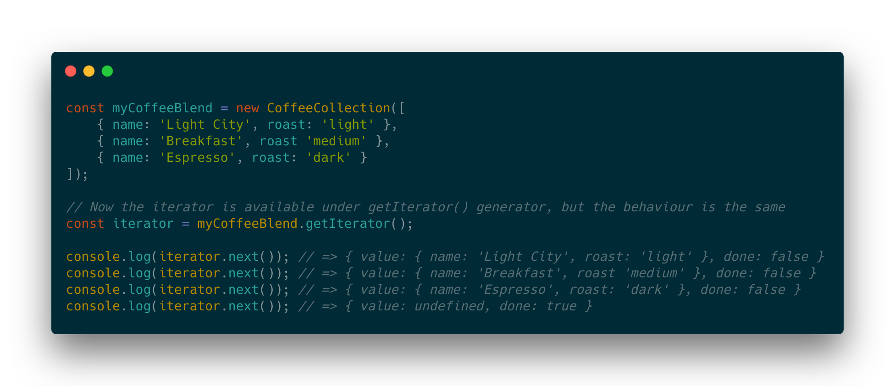
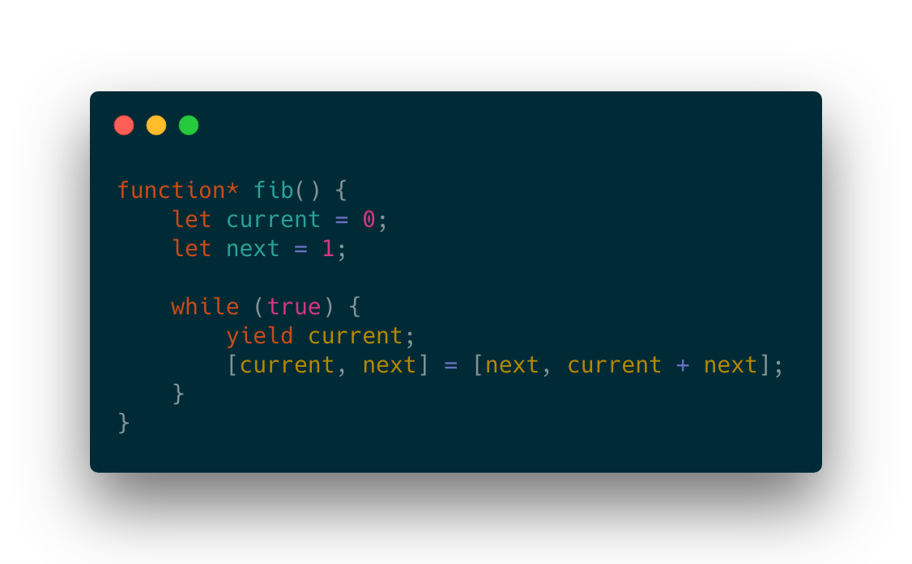
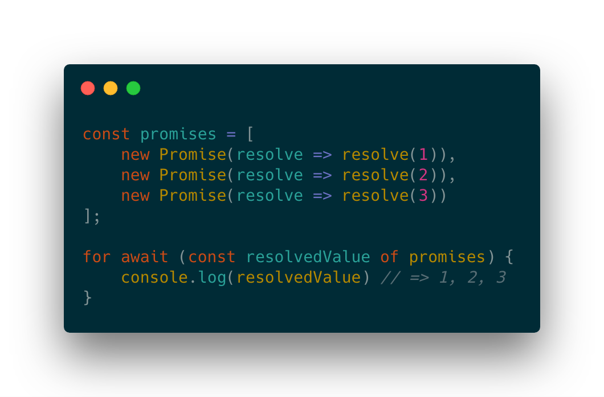

## <span class="highlight">Async Iterators & Generators in ES2018</span> Author: Marcin Panek
### <span class="highlight">1. ES6 Iterators</span> #### <span class="highlight">1. ES6 Iterators</span> - Iterate over <span class="highlight">`Object, Class, Map, Set`</span> or any other container - Implement <span class="highlight">`Symbol.iterator`</span> in container - A <span class="highlight">`for ... of`</span> loop can be used to iterate over collection #### <span class="highlight">1. ES6 Iterators</span>  #### <span class="highlight">1. ES6 Iterators</span>  #### <span class="highlight">1. ES6 Iterators</span> 
### <span class="highlight">2. ES6 Generators</span> #### <span class="highlight">2. ES6 Generators</span> - Provide a higher-level abstraction to<span class="highlight"> `iterables`</span> - Can operate on <span class="highlight">`streams` </span> - Preserve inner state and pause execution - Memory efficient #### <span class="highlight">2. ES6 Generators</span>  #### <span class="highlight">2. ES6 Generators</span>  #### <span class="highlight">2. ES6 Generators</span> #### <span class="highlight">2. ES6 Generators</span>  #### <span class="highlight">2. ES6 Generators</span> ### <span class="highlight">Fibonacci Number Generator:</span> <button class="btn btn-2 btn-2b" onclick="nextFib()">Next</button> <h3 id="fibonacci">Start</h2>
### <span class="highlight">3. ES9 Async Iterators</span> #### <span class="highlight">3. ES9 Async Iterators</span> - An <span class="highlight">`Iterator`</span> that can handle <span class="highlight">`Promise`</span> - Implement a <span class="highlight">`Symbol.asyncIterator`</span> function instead of <span class="highlight">`Symbol.iterator`</span> - A <span class="highlight">`for await ... of`</span> loop can be used to iterate over collection #### <span class="highlight">3. ES9 Async Iterators</span>  #### <span class="highlight">3. ES9 Async Iterators</span> ### <span class="highlight">Async Iteration Pagination:</span> <button class="btn btn-2 btn-2b" id="prev" onclick="prevPage()">Prev</button> <button class="btn btn-2 btn-2b" id="next" onclick="nextPage()">Next</button> <span id="content">Commit message:</span>
### <span class="highlight">4. ES9 Async Generators</span> #### <span class="highlight">4. ES9 Async Generators</span> - Provide higher level abstraction to <span class="highlight">`Async Iterables`</span> - Concept similat to <span class="highlight">`Observable/Observer`</span> pattern with a difference that it behaves as a <span class="highlight">`Passive Producer`</span>???